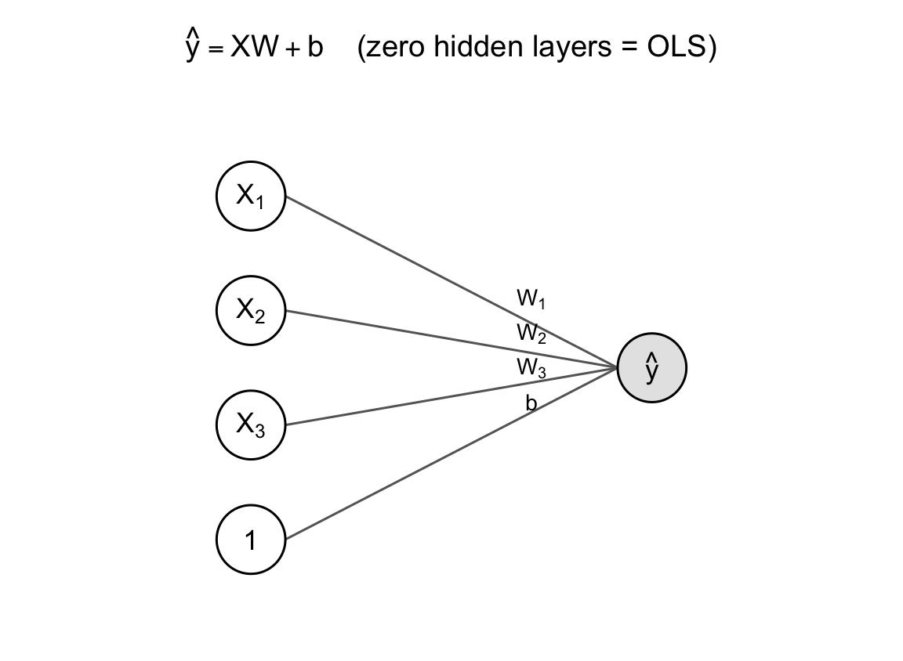
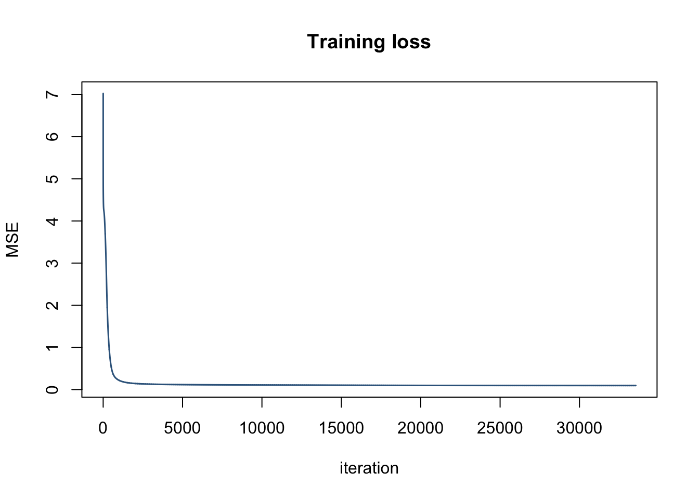

We often hear “deep learning is a bunch of matrix multiplications”. Is that true? If yes, then is it actually a linear operator like OLS?
Indeed, there are many similarities between OLS and deep learning. Deep learning is like a composition of many linear models with different activation functions. In fact, a linear model is a neural network with zero hidden layers.
Training: loss and backpropagation
So far we have described the architecture of a neural network and its relationship to OLS. Now we will describe how the network is trained.
We want to minimize our loss function \(L(\theta) = \frac{1}{n}\sum_i (y_i - \hat y_i(\theta))^2\) using the parameters across the entire network, where \(\theta = \{W^{(1)}, b^{(1)}, \ldots, W^{(L+1)}, b^{(L+1)}\}\). Training a network is hard; to get an understanding of the size of \(\theta\), let \(k_l\) denote the number of nodes in layer \(l\), for \(l = 0, 1, \ldots, L+1\), with \(k_0\) the number of input features in the original \(X\) and \(k_{L+1} = 1\) for a single regression output. Layer \(l\)’s weight matrix \(W^{(l)}\) maps the \(k_{l-1}\) nodes of the previous layer into the \(k_l\) nodes of layer \(l\), so \(W^{(l)}\) is \(k_{l-1}\times k_l\); its bias \(b^{(l)}\) has one entry per node of layer \(l\), so it’s \(k_l\)-dimensional. Altogether,
\[|\theta| = \sum_{l=1}^{L+1}\left(k_{l-1}k_l + k_l\right).\]
In our running example, \(k_0 = 3\) inputs, \(k_1 = 3\) hidden units, \(k_2 = 1\) output, so \(W^{(1)}\) is \(3\times3\) (9 parameters), \(b^{(1)}\) is 3-dimensional, \(W^{(2)}\) is \(3\times1\) (3 parameters), and \(b^{(2)}\) is a single scalar, for \(|\theta| = (9+3)+(3+1) = 16\) parameters total.
We can’t optimize the loss function algebraically in closed form. Instead, we will solve this using numerical optimization, which requires us to know the gradient of \(L(\theta)\) at each of its parameters. Expressing the gradient around a layer \(l\) is natural since a layer is matrix multiplication (due to vectorization described above) and a single activation layer. We are going to leverage the fact that layer \(l\) is directly related to layer \(l-1\) in order to create an elegant recursion. We will apply the chain rule throughout that recursion to create a simple computational strategy, known as backpropagation.
Backpropagation is a very clever computational strategy. But let’s start with the naive formulation, which would be to compute \(\partial L/\partial\theta\). Say we try to compute a specific component \(\partial L/\partial W^{(l)}\), the way to do this is to express \(\hat{y}(\theta)\) from the loss function as a function of the output layer, which is a function of the previous layer, which is a function of its previous layer, etc, until peeling backwards to layer \(l\). Expressing \(\hat{y}(\theta)\) like this lets us differentiate it by \(W^{(l)}\). Let’s go back to our 1 hidden layer example, where there are 3 \(X\) inputs that go to 1 hidden layer with 3 nodes, which goes to the output layer. Differentiating the loss by the parameters in the hidden layer, \(W^{(1)}\) would look like
\[\begin{align} L(\theta) &= \frac{1}{n}\sum_i (y_i - \hat y_i(\theta))^2 \\ z^{(1)} &= XW^{(1)} + b^{(1)} \\ h &= \sigma(z^{(1)}) \\ \hat y &= hW^{(2)} + b^{(2)} \\ \frac{\partial L}{\partial W^{(1)}} &= \frac{\partial L}{\partial \hat y} \cdot \frac{\partial \hat y}{\partial h} \cdot \frac{\partial h}{\partial z^{(1)}} \cdot \frac{\partial z^{(1)}}{\partial W^{(1)}} \end{align}\]
Conceptually, we unpacked the gradient through a series of chain rules, and it looks like we can just multiply through. Unfortunately the reality is much more complex because each of these variables have their own shape, some are scalars, some are vectors, some are matrices. It is misleading to say it’s just multiplication. Let’s examine the structure:
- \(\partial L/\partial\hat y\) is a scalar, since the output layer here has width \(k_2 = 1\).
- \(\partial\hat y/\partial h\) is a \(1\times k_1\) row vector — the sensitivity of the single output to each of the \(k_1 = 3\) hidden units — and combining it with the scalar before it is ordinary scalar-vector rescaling.
- \(\partial h/\partial z^{(1)}\) is, in full generality, a \(k_1\times k_1\) Jacobian, but because \(h = \sigma(z^{(1)})\) acts unit by unit that Jacobian is diagonal and collapses to the \(k_1\)-vector \(\sigma'(z^{(1)})\); combining it with the row vector before it is an elementwise (Hadamard) product. Chaining these first three factors together is \(\delta^{(1)} = \partial L/\partial z^{(1)}\), a \(1\times k_1\) row vector.
- \(\partial z^{(1)}/\partial W^{(1)}\) is, in full generality, a three-index object — \(z^{(1)}\) has \(k_1\) entries and \(W^{(1)}\) has \(k_0\times k_1\) entries of its own. Differentiating a vector by a matrix is going to feel funny, but we leverage the fact that \(z^{(1)} = XW^{(1)} + b^{(1)}\) is affine, and each \(z^{(1)}_j\) only depends on column \(j\) of \(W^{(1)}\) through the same \(k_0\) inputs, so \(\partial z^{(1)}_j/\partial W^{(1)}_{ij} = X_i\) for every \(j\). This is just \(X\) replicated multiple times, the same \(k_0\)-vector no matter which hidden unit \(j\) we’re looking at. Stacking that \(k_0\)-vector with the \(1\times k_1\) row vector \(\delta^{(1)}\) from the first three factors is an outer product, \(X'\delta^{(1)}\), producing the \(k_0\times k_1\) result that matches \(W^{(1)}\)’s own shape.
It turns out this is unnecessarily complicated. We can make the computation much more tractable by factoring out \(\delta^{(l)} = \partial L/\partial z^{(l)}\), the loss’s sensitivity to the pre-activation. We rewrite the chain rule above as
\[\boxed{\frac{\partial L}{\partial W^{(l)}} = h^{(l-1)\prime}\delta^{(l)}.}\]
This says that the gradient at layer \(l\) is partially computed using output information that we already know from the previous layer. The remainder, \(\delta^{(l)}\), is the peeling of layers from the final output going backwards. The gradient is the product of a forward pass and a backward pass, which is the critical insight for how to organize the computational strategy. Once a set of weights have been initialized, we are able to compute all \(h\) values for all layers in a single forward pass. Similarly, we can compute all \(\delta\) values for all layers in a single backwards pass. The computation for \(\delta\) values ought to leverage a cache of \(h\) values from the first pass. As a result, we can compute \(\frac{\partial L}{\partial W^{(l)}}\) for all layers with a single forward and backwards pass. This is the key insight behind backpropagation and avoids a quadratic complexity that is in the naive approach.
The backwards pass is computed as
\[\boxed{\delta^{(l)} = \frac{\partial L}{\partial z^{(l)}} = \frac{\partial L}{\partial z^{(l+1)}}\cdot\frac{\partial z^{(l+1)}}{\partial h^{(l)}}\cdot\frac{\partial h^{(l)}}{\partial z^{(l)}} = \delta^{(l+1)}W^{(l+1)\prime}\odot\sigma'\!\left(z^{(l)}\right)}\]
Practical example
Let’s run this on our 3-input, 3-hidden-unit, 1-output network, starting at the output layer and working backward. The output layer has no activation, so \(z^{(2)} = \hat y\) directly, and the base case is just \(\delta^{(2)} = \partial L/\partial\hat y = -\frac{2}{n}(y - \hat y)\). Say for one training example \(y - \hat y = -0.2\) (with \(n=1\)), so \(\delta^{(2)} = 0.4\). Suppose the output layer’s weights are \(W^{(2)} = (1,\ 0.5,\ -1)\) and \(\sigma'(z^{(1)}) = (0.5,\ 0.2,\ 0.1)\) for that example. One application of the recursion gives
\[\begin{align} \delta^{(1)} &= \left(\delta^{(2)}W^{(2)\prime}\right)\odot\sigma'\!\left(z^{(1)}\right) \\ &= \left(0.4\times(1,\ 0.5,\ -1)\right)\odot(0.5,\ 0.2,\ 0.1) \\ &= (0.4,\ 0.2,\ -0.4)\odot(0.5,\ 0.2,\ 0.1) \\ &= (0.2,\ 0.04,\ -0.04). \end{align}\]
If this network had another hidden layer before this one, we would repeat exactly this step — retrieve the delta value from the layer in front, multiply by that layer’s weights, then multiply elementwise by the current layer’s \(\sigma'\), and so on.
Now we bring it all back together. Say we had \(X = (1,\ 2,\ -1)\), a cached \(h\) value of \(h = (0.6,\ 0.7,\ 0.3)\). With \(\delta^{(1)}\) and \(\delta^{(2)}\) above, the gradients we need for numerical optimization are \[\frac{\partial L}{\partial W^{(1)}} = X'\delta^{(1)} = \begin{pmatrix}0.2 & 0.04 & -0.04\\0.4 & 0.08 & -0.08\\-0.2 & -0.04 & 0.04\end{pmatrix}, \qquad \frac{\partial L}{\partial W^{(2)}} = h'\delta^{(2)} = \begin{pmatrix}0.24\\0.28\\0.12\end{pmatrix}.\]
Complexities in real world training
Vanishing gradients
Every time we peel a layer of \(\delta^{(l)}\), we multiply by a \(\sigma'(z^{(m)})\). Consider the case when \(\sigma\) is a sigmoid, or \(\tanh\); their derivatives hit a ceiling of 0.25 and 1. As we accumulate more of these multiplications, \(\delta\) shrinks geometrically towards 0 as we have more layers. A network that is too deep becomes very difficult to train. In particular, the convergence speed for weights near the output, which have less peeling, is higher than the convergence speed for weights near the input.
Note this does not happen in OLS.
In practice this is manageable. ReLU-family activations sidestep the sigmoid/tanh ceiling directly, since their derivative is exactly 1 (not less than 1) wherever the unit is “on.” Skip connections — adding \(h^{(l-2)}\) back into \(h^{(l)}\), as in a residual network — give \(\delta\) an alternate path back to early layers with a derivative of exactly 1, so it doesn’t have to survive a long product of \(\sigma'\) terms to get there. Careful weight initialization (e.g. He or Xavier initialization, which scales \(W^{(l)}\)’s starting variance by the layer’s width) and normalization layers (batch norm, layer norm) keep \(z^{(l)}\) away from \(\sigma\)’s saturating extremes to begin with.
Dead units
The ReLU function, \(\sigma(z) = \max(0, z)\), has derivative exactly \(0\) for \(z < 0\). If at any point during the training process a unit’s weights yield \(z < 0\) for every training example, \(\sigma'(z) = 0\) wherever it is evaluated, so \(\delta^{(l)} = 0\) for that unit on every future step. The multiplication with zero prevents us from ever updating the weights. The unit is permanently stuck outputting \(0\), a “dead” unit.
Note this does not happen in OLS.
The usual fix is to give a unit some way back to life. Leaky ReLU, \(\sigma(z) = \max(\alpha z, z)\) for a small \(\alpha\) like 0.01, has a small nonzero slope for \(z<0\) instead of exactly 0, so a unit that’s gone negative still receives a (small) gradient and can recover. Smooth variants like ELU, GELU, or Swish achieve something similar without a hard kink at 0. Good initialization and normalization help here too, by keeping a unit’s pre-activations from being pushed uniformly negative in the first place.
Convexity
The loss function in OLS is convex, so a minimum is guaranteed to be found. Composing several nonlinear activations destroys convexity. The loss surface of a deep network can have many local minima and plateaus, and gradient descent has no guarantee of finding the global minimum, or even the same minimum across two different random initializations.
Modern practice largely sidesteps this rather than solving it. Empirically, the local minima that stochastic gradient descent finds in large, overparameterized networks tend to have similar loss — the genuinely bad local minima that plague small networks become rare as width grows, which is part of why today’s networks are made so large. Multiple random initializations, or training several networks and ensembling their predictions, is a cheap hedge against landing in a worse-than-typical minimum.
Saddle points
In high dimensions, non-convex loss surfaces have far more saddle points than bad local minima. A critical point, where the gradient \(\nabla_\theta L = 0\), is a local minimum only if the loss curves upward in every one of the \(\dim(\theta)\) directions simultaneously; as the parameter count grows large, the chance that all directions curve this way shrinks fast, while simultaneously the odds of some directions curve up and others curve down — a saddle — grows. Near a saddle the gradient can shrink toward zero even though we are nowhere near a good solution, so plain gradient descent can stall there for a long time. This is one reason practical training uses momentum or adaptive step sizes, e.g. Adam, instead of plain gradient descent.
Momentum carries velocity through a flat region instead of slowing to match the local gradient, so it coasts past saddle points rather than stalling on them. Adam and its relatives rescale each parameter’s step by a running estimate of that parameter’s typical gradient magnitude, speeding up movement in directions where the raw gradient is tiny. The mini-batch noise in stochastic gradient descent helps too: an exact saddle point is a measure-zero target, and noisy gradients essentially never sit exactly on one for long.
Code example
The rest of this post has been symbolic. Let’s make it concrete: build the exact 3-input, one-hidden-layer, one-output network from the examples above in R, starting from a blank dataframe and ending with a fully trained network.
The data
We need a \(y\) that a linear model can’t fit exactly, otherwise the hidden layer would buy us nothing. \(y\) below is a nonlinear function of \(X_1, X_2, X_3\) — a quadratic term and an interaction — plus noise:
set.seed(1)
n <- 200
df <- data.frame(
X1 = rnorm(n),
X2 = rnorm(n),
X3 = rnorm(n)
)
df$y <- with(df, X1^2 - 2*X1*X2 + 0.5*X3 + rnorm(n, sd = 0.3))
head(df) X1 X2 X3 y
1 -0.6264538 0.4094018 1.0744410 1.340287
2 0.1836433 1.6888733 1.8956548 0.811979
3 -0.8356286 1.5865884 -0.6029973 3.206866
4 1.5952808 -0.3309078 -0.3908678 3.567926
5 0.3295078 -2.2852355 -0.4162220 1.365468
6 -0.8204684 2.4976616 -0.3756574 4.242824Architecture and weights
\(k_0 = 3\) inputs, \(k_1 = 6\) hidden units, \(k_2 = 1\) output. \(W^{(1)}\) is \(k_0\times k_1\), \(W^{(2)}\) is \(k_1\times k_2\), and both biases start at 0:
X <- as.matrix(df[, c("X1", "X2", "X3")])
y <- matrix(df$y, ncol = 1)
k0 <- 3; k1 <- 6; k2 <- 1
sigmoid <- function(z) 1 / (1 + exp(-z))
set.seed(42)
W1 <- matrix(rnorm(k0 * k1, sd = 0.5), nrow = k0, ncol = k1)
b1 <- rep(0, k1)
W2 <- matrix(rnorm(k1 * k2, sd = 0.5), nrow = k1, ncol = k2)
b2 <- rep(0, k2)Forward and backward pass
forward_pass() computes \(z^{(1)}\), \(h\), and \(\hat y\) for every row of \(X\) at once. backward_pass() is nothing but the \(\delta\) recursion and the outer-product gradient formula derived above — \(\delta^{(2)} = -\frac{2}{n}(y-\hat y)\), \(\delta^{(1)} = (\delta^{(2)}W^{(2)\prime})\odot\sigma'(z^{(1)})\), and \(\partial L/\partial W^{(l)} = h^{(l-1)\prime}\delta^{(l)}\):
forward_pass <- function(X, W1, b1, W2, b2) {
n <- nrow(X)
Z1 <- X %*% W1 + matrix(b1, n, length(b1), byrow = TRUE)
H <- sigmoid(Z1)
Yhat <- H %*% W2 + matrix(b2, n, length(b2), byrow = TRUE)
list(Z1 = Z1, H = H, Yhat = Yhat)
}
backward_pass <- function(X, y, H, Yhat, W2) {
n <- nrow(X)
delta2 <- -2 / n * (y - Yhat)
dW2 <- t(H) %*% delta2
db2 <- colSums(delta2)
delta1 <- (delta2 %*% t(W2)) * (H * (1 - H))
dW1 <- t(X) %*% delta1
db1 <- colSums(delta1)
list(dW1 = dW1, db1 = db1, dW2 = dW2, db2 = db2)
}One single iteration
Before training, run the two functions once to see exactly what a single gradient computation produces from the randomly initialized weights:
fwd <- forward_pass(X, W1, b1, W2, b2)
cat("Initial MSE:", mean((y - fwd$Yhat)^2), "\n")Initial MSE: 7.025462 grad <- backward_pass(X, y, fwd$H, fwd$Yhat, W2)
cat("dL/dW1:\n"); print(round(grad$dW1, 4))dL/dW1: [,1] [,2] [,3] [,4] [,5] [,6]
X1 0.0414 -0.0482 -0.0044 0.0496 0.0022 -0.0369
X2 0.1196 -0.0780 0.0159 0.0153 0.0093 -0.0489
X3 0.4599 -0.2809 0.0346 0.1933 0.0334 -0.1195cat("dL/dW2:\n"); print(round(grad$dW2, 4))dL/dW2: [,1]
[1,] -1.4594
[2,] -1.3988
[3,] -1.7333
[4,] -1.8041
[5,] -1.2826
[6,] -0.9423That’s the entire computation from the “Practical Example” section above, run on 200 rows at once instead of one row by hand. backward_pass() never does anything except the \(\delta\) recursion and an outer product, no matter how many layers or rows are involved.
Training to convergence
One gradient step nudges the weights very slightly. Training just repeats the forward/backward pair, taking a small step down the gradient each time, until the loss stops moving:
lr <- 0.1
max_iter <- 40000
tol <- 1e-7
prev_loss <- Inf
loss_history <- numeric(0)
for (iter in 1:max_iter) {
fwd <- forward_pass(X, W1, b1, W2, b2)
loss <- mean((y - fwd$Yhat)^2)
loss_history[iter] <- loss
if (abs(prev_loss - loss) < tol) break
prev_loss <- loss
grad <- backward_pass(X, y, fwd$H, fwd$Yhat, W2)
W1 <- W1 - lr * grad$dW1
b1 <- b1 - lr * grad$db1
W2 <- W2 - lr * grad$dW2
b2 <- b2 - lr * grad$db2
}
cat("Converged after", iter, "iterations. Final MSE:", round(loss, 4), "\n")Converged after 33544 iterations. Final MSE: 0.0966 plot(loss_history, type = "l", col = "steelblue4", lwd = 1.5,
xlab = "iteration", ylab = "MSE", main = "Training loss")
ols_fit <- lm(y ~ X1 + X2 + X3, data = df)
cat("OLS MSE: ", round(mean(residuals(ols_fit)^2), 4), "\n")OLS MSE: 4.2993 cat("Network MSE:", round(loss, 4), "\n")Network MSE: 0.0966 The network converges to roughly the noise floor (\(\text{sd}=0.3 \Rightarrow \text{Var}\approx 0.09\)), while OLS is stuck far higher — a linear combination of \(X_1, X_2, X_3\) has no way to represent \(X_1^2\) or \(X_1 X_2\). The hidden layer built exactly the nonlinear features it needed, on its own, from data alone.